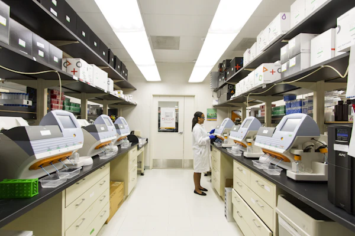

Department of Hematology
Blood Testing & Cellular Morphology
Our hematology laboratory utilizes multi-parameter flow cytometry and 5-part differential laser analyzers to evaluate cellular components of peripheral blood. We assist clinicians in diagnosing anemia, inflammatory disorders, infections, hematologic malignancies, and coagulation abnormalities.
Complete Blood Count (CBC)
Prothrombin Time / INR
Erythrocyte Sedimentation Rate (ESR)
Peripheral Blood Smear Examination
Reticulocyte Count
ABO Blood Grouping & Rh Factor
